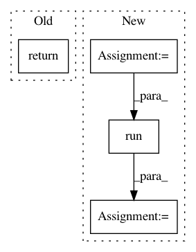

e7d5e460cd9ca70ed8e455ff7d4c00d93a1034fa,tf_unet/unet.py,Trainer,store_prediction,#Trainer#,256
Before Change
img = util.combine_img_prediction(batch_x, batch_y, prediction)
util.save_image(img, "%s/%s.jpg"%(self.prediction_path, name))
return prediction.shape
def output_epoch_stats(self, epoch, total_loss, training_iters, lr):
print("Epoch {:}, Average loss: {:.4f}, learning rate: {:.4f}".format(epoch, (total_loss / training_iters), lr))
After Change
prediction = sess.run(self.net.predicter, feed_dict={self.net.x: batch_x,
self.net.y: batch_y,
self.net.keep_prob: 1.})
pred_shape = prediction.shape
loss = sess.run(self.net.cost, feed_dict={self.net.x: batch_x,
self.net.y: util.crop_to_shape(batch_y, pred_shape),
self.net.keep_prob: 1.})
print("Prediction error= {:.1f}%, loss= {:.4f}".format(error_rate(prediction,
util.crop_to_shape(batch_y,
prediction.shape)),
In pattern: SUPERPATTERN
Frequency: 3
Non-data size: 4
Instances
Project Name: jakeret/tf_unet
Commit Name: e7d5e460cd9ca70ed8e455ff7d4c00d93a1034fa
Time: 2016-08-22
Author: jakeret@phys.ethz.ch
File Name: tf_unet/unet.py
Class Name: Trainer
Method Name: store_prediction
Project Name: openai/pixel-cnn
Commit Name: 420747a2f5f6f23b84f62f9a00481ef53a4a4623
Time: 2016-11-11
Author: tim@Tims-MacBook-Pro.local
File Name: train.py
Class Name:
Method Name: sample_from_model
Project Name: hassony2/kinetics_i3d_pytorch
Commit Name: f8715d27e2efdb0800d1265eb1383f0a99296732
Time: 2017-11-25
Author: yana.hasson@inria.fr
File Name: src/i3nception.py
Class Name:
Method Name: get_conv_params